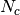
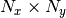

msdnet.data module¶
Module for image data input.
Below,  is the number of image channels, and  the image dimensions in pixels.
-
class
msdnet.data.DataPoint[source]¶ Bases:
abc.ABCBase class for a single data point (input image with corresponding target image)
-
property
input¶ Input image
-
property
target¶ Target image
-
property
mask¶ Mask image
-
property
-
class
msdnet.data.OnlyAllDataPoint[source]¶ Bases:
msdnet.data.DataPointBase class for a single data point (input image with corresponding target image) that can only return all images at once (i.e. getall).
-
errormsg= 'Only getall supported'¶
-
-
class
msdnet.data.BatchProvider(dlist, batchsize, seed=None)[source]¶ Bases:
objectObject that returns small random batches of datapoints.
- Parameters
dlist – List of
DataPoint.batchsize – Number of datapoints per batch.
seed – (optional) Random seed.
-
class
msdnet.data.ArrayDataPoint(inputarray, targetarray=None, maskarray=None)[source]¶ Bases:
msdnet.data.DataPointDatapoint with numpy array image data.
- Parameters
inputarray – numpy array with input image (size:
 )
)targetarray – (optional) numpy array with target image (size:
)maskarray – (optional) numpy array with mask image (size:
)
-
class
msdnet.data.ImageFileDataPoint(inputfile, targetfile=None, maskfile=None)[source]¶ Bases:
msdnet.data.DataPointDatapoint with image files. Supported are: TIFFs and most standard image formats (e.g. PNG and JPEG).
- Parameters
inputfile – file name of input image
targetfile – (optional) file name of target image
maskfile – (optional) file name of mask image
-
class
msdnet.data.OneHotDataPoint(datapoint, labels, maskunlabeled=True)[source]¶ Bases:
msdnet.data.DataPointDatapoint that converts a data point with a labeled image to one-hot images.
- Parameters
datapoint – input
DataPointlabels – list of numberical labels in label image
maskunlabeled – (optional) whether to mask out unlabeled pixels
-
class
msdnet.data.SlabDataPoint(datapoints, flip=False)[source]¶ Bases:
msdnet.data.DataPointDatapoint that represents a slab of data points.
- Parameters
datapoints – list of
DataPoint.flip – (optional) whether to augment data by also flipping slab.